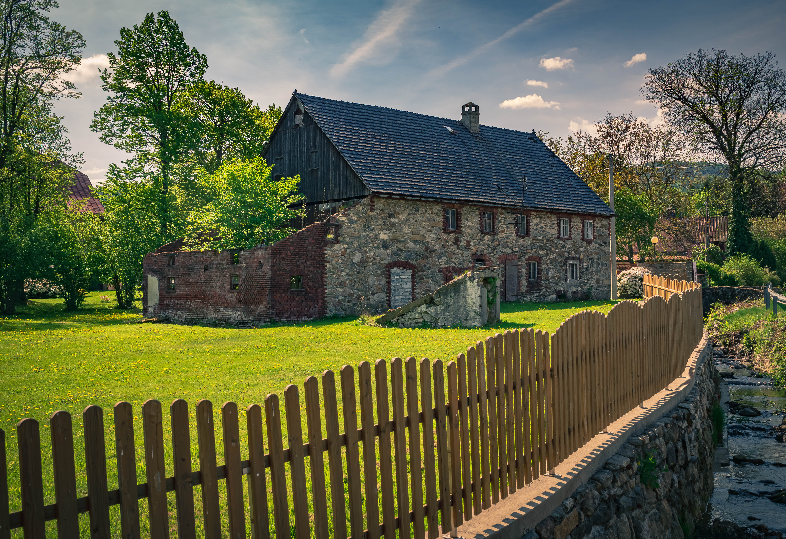

Dziedzictwo
Chronimy historyczną architekturę, krajobraz kulturowy i autentyczną substancję starych budynków.
Fundacja wyrosła ze społeczności ludzi, których połączyła troska o stare domy i krajobraz Dolnego Śląska.

Około 26 tys. członkostw w grupie „Ruinersi na Dolnym Śląsku” i około 30 tys. w grupie „Ruinersi – Stare Domy do Uratowania”. Liczby mogą obejmować te same osoby w obu grupach.
Chronimy historyczną architekturę, krajobraz kulturowy i autentyczną substancję starych budynków.
Pokazujemy, jak odpowiedzialnie remontować stare domy, rozpoznawać zagrożenia i unikać nieodwracalnych błędów.
Łączymy właścicieli, rzemieślników, architektów, konserwatorów, ekspertów, organizacje i pasjonatów.
Wprowadzamy perspektywę właścicieli i organizacji społecznych do współpracy z administracją, nauką, samorządami i środowiskiem konserwatorskim.